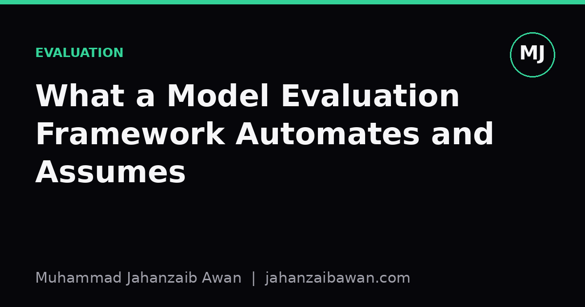
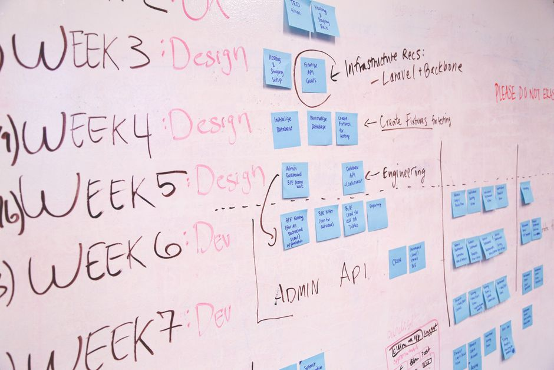

What a Model Evaluation Framework Automates and Assumes
Evaluation harnesses save time by hiding decisions inside defaults. Knowing which decisions are hidden is what separates a trustworthy number from a comforting one.

Why the automation is seductive
Every serious machine learning library now ships an evaluation framework: a function or class that takes your model, your data, and a metric name, and returns a number you can put in a table. This is genuinely useful. Before these tools existed, people rolled their own splitting and scoring logic, and it was common to find off-by-one errors, accidental peeking at test labels, or metrics computed on the wrong axis. Automation removes a whole category of careless mistakes.
The problem is that automation does not just remove mistakes, it also removes visibility. When a framework handles the split, the scaling, the cross validation folds, and the aggregation in one call, you stop asking whether those steps are appropriate for your specific data. The framework becomes a black box that happens to sit between you and your conclusions, and black boxes are exactly the thing a rigorous evaluator is supposed to be suspicious of.
I think the healthiest way to use these tools is to treat the number they return as a claim, not a fact, and then interrogate the claim by asking what had to be true for that number to mean what it appears to mean. That interrogation is the actual skill. The library call is just typing.
What gets automated, concretely
Most evaluation frameworks bundle four things. First, splitting: dividing data into train, validation, and test partitions, often with a single random seed. Second, resampling: k-fold cross validation or repeated holdout, to reduce the variance of a single split. Third, scoring: computing one or more metrics such as accuracy, F1, mean squared error, or AUC, on held-out predictions. Fourth, aggregation: averaging scores across folds or seeds and reporting a mean with, if you are lucky, a spread.
Consider a concrete case. Suppose you have five thousand rows of tabular customer data and you want to predict churn. You call a standard cross validation routine with five folds and get back accuracy scores of 0.81, 0.83, 0.80, 0.82, 0.84, which averages to 0.82. That is a clean, defensible-looking result, produced in three lines of code. It took the framework a fraction of a second to shuffle the rows, build the folds, fit five models, and average five numbers.
Underneath that convenience sits a specific, unstated model of your data: that each row is an independent, identically distributed sample, that shuffling rows before splitting does no harm, and that accuracy is the metric that matters for the decision you are actually going to make with the model. All three of those are assumptions, not facts, and none of them are checked by the framework itself.

The assumptions that quietly break things
The independence assumption is the one that causes the most damage in practice. If your five thousand rows actually come from eight hundred customers, each with several repeated observations over time, then a random shuffle will put some observations from the same customer in both the train and test folds. The model can partly memorise customer-specific quirks rather than learning general churn patterns, and your 0.82 accuracy is inflated by leakage that has nothing to do with real predictive skill. Grouped splitting, keeping all of a customer's rows on one side of the split, is the fix, but the framework will not tell you to do it. It will happily shuffle by row and hand you a confident, wrong number.
Temporal structure causes a related but distinct problem. If churn depends on external events, a promotion in March, a price rise in June, then a random split mixes future information into the training set relative to the test set. A model evaluated this way can look excellent in cross validation and then degrade sharply in production, because production only ever sees the past predicting the future. The remedy is a time-based split, training on earlier periods and testing on later ones, which usually produces a noticeably less flattering number. That drop is not a bug, it is the framework finally telling you something honest.
The metric choice assumption is subtler but equally consequential. Accuracy treats every error identically, but if churners are five percent of your customers, a model that predicts nobody churns still scores 0.95 accuracy while being useless. The evaluation framework will compute that 0.95 without complaint, because computing accuracy is exactly what you asked it to do. Whether accuracy is the right question is a decision that belongs to you, informed by the cost of a missed churner versus a false alarm, and no default metric argument in a function call can make that decision for you.
There is also a quieter assumption about the test set itself: that it represents the population you will actually deploy against. A test set drawn from the same historical window and the same customer segment as training will not reveal how the model behaves on a new region, a new product line, or a shift in customer behaviour after a policy change. The framework reports performance on the data you gave it, not on the world you are about to release the model into, and those are only the same thing if you have deliberately arranged for them to be.
A practical way to use the tools honestly
None of this is an argument against using evaluation frameworks. Writing your own cross validation loop from scratch does not make you more rigorous, it usually just introduces new bugs alongside the old assumptions. The argument is for a short checklist you run before trusting the output: are my rows truly independent, or do they cluster by entity, time, or source; does a random split reflect how the model will actually be used, or does the deployment setting have structure that a shuffle destroys; and does my chosen metric penalise the errors that actually cost something, or did I pick it because it was the default.
In the churn example, the honest workflow looks like this: group by customer to prevent leakage, respect chronological order if the business genuinely rolls forward in time, and report precision, recall, and a cost-weighted metric alongside accuracy so the class imbalance cannot hide. The resulting number might drop from 0.82 to something like 0.71, and that is not a worse result, it is a truer one. A model that reports 0.71 under an honest evaluation is far more valuable than one that reports 0.82 under a leaky one, because the first number will still be roughly right after deployment and the second one will not.
The broader lesson is that a framework automates procedure, not judgement. It will do exactly what you tell it to do, quickly and consistently, which is precisely why an unexamined default is dangerous: it fails silently and reproducibly. Treat every evaluation number as conditional on a set of choices you made, list those choices explicitly, and check each one against how the model will actually be used. That habit costs a few extra minutes per experiment and it is the difference between a metric you can defend and one that merely looks defensible.
